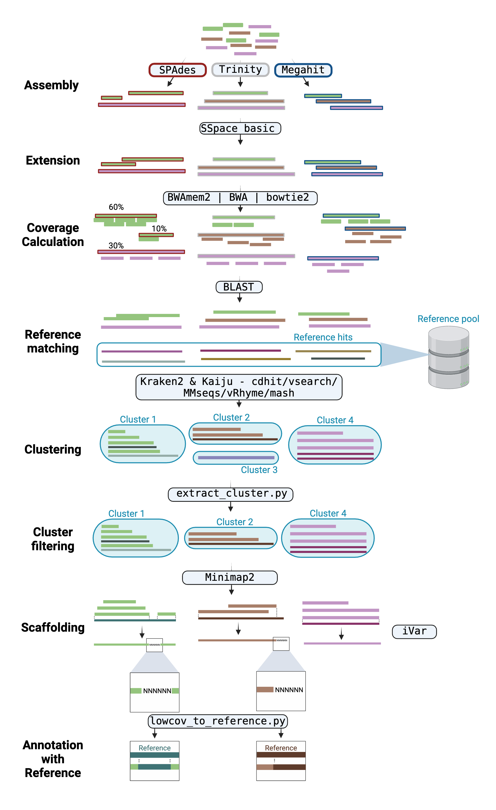

Assembly & polishing
Viralgenie offers an elaborate workflow for the assembly and polishing of viral genomes:
- Assembly: combining the results of multiple assemblers.
- Extension: extending contigs using paired-end reads.
- Coverage calculation: mapping reads back to the contigs to determine coverage.
- Reference Matching: comparing contigs to a reference sequence pool.
- Taxonomy guided Clustering: clustering contigs based on taxonomy and nucleotide similarity.
- Pre-clustering: separating contigs based on identified taxonomy-id.
- Actual clustering: clustering contigs based on nucleotide similarity.
- Scaffolding: scaffolding the contigs to the centroid of each bin.
- Annotation with Reference: annotating regions with 0-depth coverage with the reference sequence.

The overall workflow of creating reference assisted assemblies can be skipped with the argument
--skip_assembly. See the parameters assembly section for all relevant arguments to control the assembly steps.The overall refinement of contigs can be skipped with the argument
--skip_polishing. See the parameters polishing section for all relevant arguments to control the polishing steps.
The consensus genome of all clusters are then sent to the variant analysis & iterative refinement step.
1. De-novo Assembly
Three assemblers are used, SPAdes, Megahit, and Trinity. The resulting contigs of all specified assemblers, are combined and processed further together.
Modify the spades mode with
--spades_mode [default: rnaviral]and supply specific params with--spades_ymlor a hmm model with--spades_hmm.Specify the assemblers to use with the
--assemblersparameter where the assemblers are separated with a ','. The default isspades,megahit,trinity.
Low complexity contigs can be filtered out using prinseq++ with the --skip_contig_prinseq false parameter. Complexity filtering is primarily a run-time optimisation step. Low-complexity sequences are defined as having commonly found stretches of nucleotides with limited information content (e.g. the dinucleotide repeat CACACACACA). Such sequences can produce a large number of high-scoring but biologically insignificant results in database searches. Removing these reads therefore saves computational time and resources.
2. Extension
Contigs can be extended using SSPACE Basic with the --skip_sspace_basic false parameter. SSPACE is a tool for scaffolding contigs using paired-end reads. It is modified from SSAKE assembler and has the feature of extending contigs using reads that are unmappable in the contig assembly step. To maximize its efficiency, consider specifying the arguments --read_distance, --read_distance_sd, and --read_orientation. For more information on these arguments, see the parameters assembly section.
The extension of contigs is run by default, to skip this step, use
--skip_sspace_basic.
3. Coverage calculation
Processed reads are mapped back against the contigs to determine the number of reads mapping towards each contig. This is done with BowTie2,BWAmem2 or BWA. This step is used to remove contig clusters that have little to no coverage downstream.
Specify the mapper to use with the
--mapperparameter. The default isBWAmem2. To skip contig filtering specify--perc_reads_contig 0.
4. Reference Matching
The newly assembled contigs are compared to a reference sequence pool (--reference_pool) using a BLASTn search. This process not only helps annotate the contigs but also assists in linking together sets of contigs that are distant within a single genome. Essentially, it aids in identifying contigs belonging to the same genomic segment and choosing the right reference for scaffolding purposes.
The top 5 hits for each contig are combined with the de novo contigs and sent to the clustering step.
The reference pool can be specified with the
--reference_poolparameter. The default is the latest clustered Reference Viral DataBase (RVDB).
5. Taxonomy guided Clustering
The clustering workflow of contigs consists of 2 steps, the pre-clustering using taxonomy and actual clustering on nucleotide similarity. The taxonomy guided clustering is used to separate contigs based on taxonomy and nucleotide similarity.
graph LR;
A[Contigs] --> B["`**Pre-clustering**`"];
B --> C["`**Actual clustering**`"];5.1 Pre-clustering using taxonomy
The contigs along with their references have their taxonomy assigned using Kraken2 and Kaiju.
The default databases are the same ones used for read classification: - Kraken2: viral refseq database,
--kraken2_db- Kaiju: clustered RVDB,--kaiju_db
As Kaiju and Kraken2 can have different taxonomic assignments, an additional step is performed to resolve potential inconsistencies in taxonomy and to identify the taxonomy of the contigs. This is done with a custom script that is based on KrakenTools extract_kraken_reads.py and kaiju-Merge-Outputs.
graph LR;
A[Contigs] --> B["`**Kraken2**`"];
A --> C["`**Kaiju**`"];
B --> D[Taxon merge resolving];
C --> D;
D --> E["Taxon filtering"];
E --> F["Taxon simplification"];Having complex metagenomic samples?
The pre-clustering step can be used to simplify the taxonomy of the contigs, let NCBI's taxonomy browser help you identify taxon-id's for simplification. The simplification can be done in several ways:
- Make sure your contamination database is up to date and removes the relevant taxa.
- Exclude unclassified contigs with
--keep_unclassified falseparameter. - Simplify the taxonomy of the contigs to a higher rank using
--precluster_simplify_taxaparameter (1). - Specify the taxa to include or exclude with
--precluster_include_children(2),--precluster_include_parents(3),--precluster_exclude_children,--precluster_exclude_parents,--precluster_exclude_taxaparameters.
Warning
Providing lists to nextflow is done by encapsulating values with " and separating them with a space. For example: --precluster_exclude_taxa "taxon1 taxon2 taxon3".
-
Options here are 'species', 'genus', 'family', 'order', 'class', 'phylum', 'kingdom' or 'superkingdom'.
-
--precluster_include_children"genus1" :
Dotted lines represent exclusion of taxa.graph TD; A[family] -.- B["genus1 (included)"]; A -.- C[genus2]; B --- D[species1]; B --- E[species2]; C -.- F[species3]; -
--precluster_include_parents"species3" :
Dotted lines represent exclusion of taxa.graph TD; A["family (included)"] -.- B["genus1"] A --- C[genus2] B -.- D[species1] B -.- E[species2] C --- F[species3]
The pre-clustering step will be run by default but can be skipped with the argument
--skip_preclustering. Specify which classifier to use with--precluster_classifiersparameter. The default iskaiju,kraken2. Contig taxon filtering is still enabled despite not having to solve for inconsistencies if only Kaiju or Kraken2 is run.
5.2 Actual clustering on nucleotide similarity
The clustering is performed with one of the following tools:
These methods all come with their own advantages and disadvantages. For example, cdhitest is very fast but cannot be used for large viruses >10Mb and similarity threshold cannot go below 80% which is not preferable for highly diverse RNA viruses. Vsearch is slower but accurate. Mmseqs-linclust is the fastest but tends to create a large amount of bins. Mmseqs-cluster is slower but can handle larger datasets and is more accurate. vRhyme is a new method that is still under development but has shown promising results but can sometimes not output any bins when segments are small. Mash is a very fast comparison method is linked with a custom script that identifies communities within a network.
Tip
When pre-clustering is performed, it is recommended to set a lower identity_threshold (60-70% ANI) as the new goal becomes to separate genome segments within the same bin.
The clustering method can be specified with the
--clustering_methodparameter. The default iscdhitest.The network clustering method for
mashcan be specified with the--network_clusteringparameter. The default isconnected_components, alternative isleiden.The similarity threshold can be specified with the
--similarity_thresholdparameter. The default is0.85.
6. Coverage filtering
The coverage of the contigs is calculated using the same method as in the coverage calculation step. A cumulative sum is taken across the contigs from every assembler. If these cumulative sums are above the specified --perc_reads_contig parameter, the contig is kept. If all cumulative sums are below the specified parameter, the contig is removed.
Show me an example how it works
If the --perc_reads_contig is set to 5, the cumulative sum of the contigs from every assembler is calculated. For example:
- Cluster 1: the cumulative sum of the contigs from SPAdes is 0.6, Megahit is 0.5, the cluster is kept.
- Cluster 2: the cumulative sum of the contigs from SPAdes is 0.1, Megahit is 0.1, the cluster is removed.
- Cluster 3: the cumulative sum of the contigs from SPAdes is 0.5, Megahit is 0, the cluster is kept.
The default is
5and can be specified with the--perc_reads_contigparameter.
7. Scaffolding
After classifying all contigs and their top BLAST hits into distinct clusters or bins, the contigs are then scaffolded to the centroid of each bin. Any external references that are not centroids of the cluster are subsequently removed to prevent further bias. All members of the cluster are consequently mapped towards their centroid with Minimap2 and consensus is called using iVar-consensus.
8. Annotation with Reference
Regions with 0-depth coverage are annotated with the reference sequence. This is done with a custom script that uses the coverage of the de novo contigs towards the reference sequence to identify regions with 0-depth coverage. The reference sequence is then annotated to these regions.
This step can be skipped using
--skip_hybrid_consensusparameter.